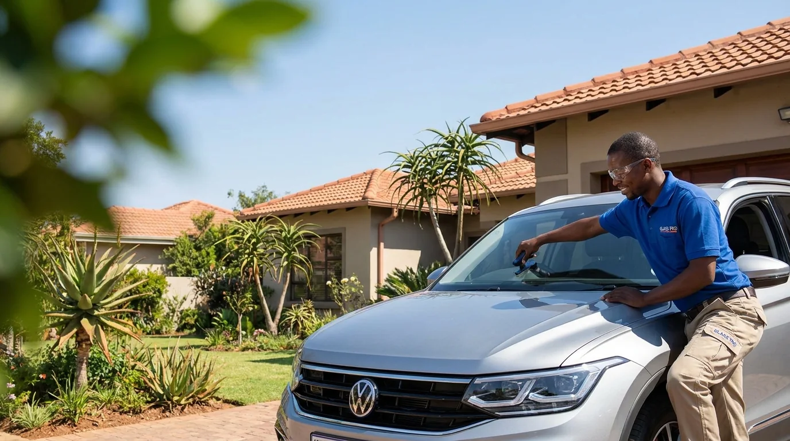
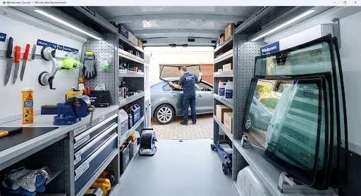
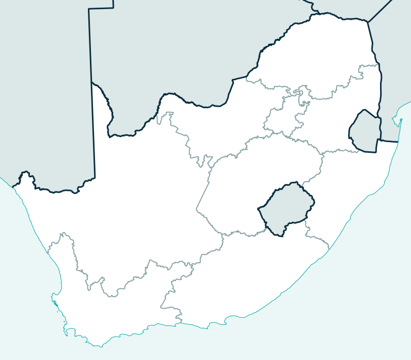

Windscreen chip repair
Address suitable stone chips before they spread. Repair retains the original windscreen and is generally the quicker, more economical route.
Explore Chip RepairMobile windscreen chip repair and full windscreen replacement at your home or workplace, across South Africa.

A clear photograph and accurate vehicle details help distinguish between a possible repair and a complete replacement.
Address suitable stone chips before they spread. Repair retains the original windscreen and is generally the quicker, more economical route.
Explore Chip RepairFor severe cracks, edge damage and damage that cannot be safely repaired, we arrange a complete mobile windscreen replacement.
Explore ReplacementOur mobile model is designed so you do not need to organise lifts, sit in traffic or lose half your day at a fitment centre.

Four clear stages reduce uncertainty and unnecessary back-and-forth.
Show the full windscreen and a close-up of the damage.
Provide the year, make, model and location.
Confirm the proposed service, price and appointment.
A technician attends the agreed location.

JHB / Pretoria Cape Town Durban Gqeberha BloemfonteinCoverage depends on current technician and stock availability. Share your suburb and we will confirm before booking.
View Service AreasWe first consider whether suitable damage can retain the original windscreen.
The service journey is organised around the vehicle's location and your schedule.
You receive a practical next step based on the visible damage and vehicle specification.
Browse common questions, or send the actual damage for assessment.
Browse All FAQsIt depends on the size, depth and position. Damage near an edge or in the driver's direct view may require replacement.
Yes. Tell us the vehicle location and we will confirm mobile-service availability and practical requirements.
Insurance support is being finalised. Cover differs between policies, so confirm glass cover and excess with your insurer.
Send the vehicle details, your location and clear photographs for a useful recommendation.
Request a Quote